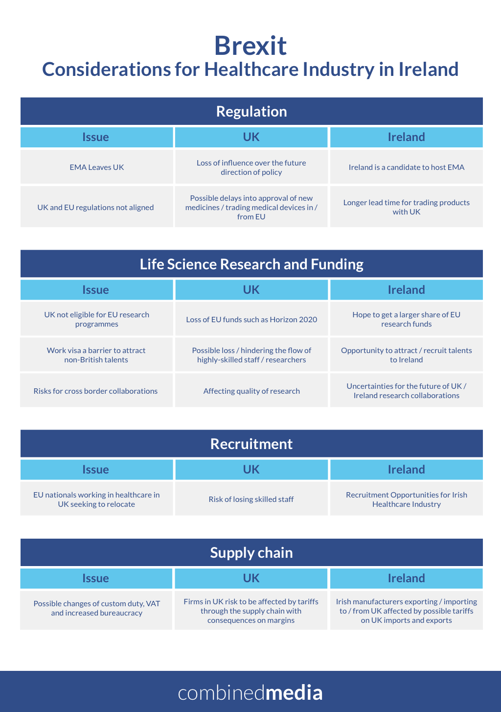

What were the threats faced by pharma after Brexit and where do we stand now?
A number of issues for the healthcare and pharma industries were raised by observers in the aftermath of the Brexit referendum last year. Almost a year on, with the UK recently triggering article 50 to leave, where do we stand on these issues? And how will they affect the Irish pharmaceutical industry?
Despite the challenges faced on many fronts, we believe that Brexit presents significant potential opportunities for pharma and healthcare industries based in Ireland, for a number of reasons.
Regulation
Impact on regulation seems to be for many one of the most worrying concern. This can be summarized by two main issues: 1) a change in the location of the location of the London-based European Medicines Agency (EMA) – the body overseeing medicines regulations across Europe; 2) and uncertainty in having a UK drug regulation not aligned with EU’s one.
As of February 2017, there were as many as 20 countries lined up to host the European Medicines Agency from the UK once Brexit is complete[1]. Ireland is one of them, liaising with the EU to have the EMA relocate to Dublin.
As noted by Minister of State for Health Promotion, Marcella Corcoran Kennedy, TD, speaking following a trip to Brussels, Ireland is a good candidate, being an English-speaking country – English is the working language of the EMA – and with Dublin as a resettlement location that could maximize retention of the 900 existing staff[2].
However, competition from other European countries is high, with Germany and Italy being the largest manufacturer of medical products in Europe.
Due to regulation concerns, some pharmaceutical firms are also planning to establish their presence in Ireland, as in the case of Craigavon-based Almac Group, one of Northern Ireland’s largest pharmaceutical manufacturers, who decided to build a factory across the border in Dundalk to address concern from their worldwide clients about the future of the regulatory regime[3].
From a UK perspective, losing the EMA means the risk of losing its influence over the future direction of policy[4] and this is neither a good news for pharmaceutical companies, that will have to separately apply to UK’s MHRA to supply a drug in the UK, nor it is for patients, who will have to endure possible delays in to the approval of new medicines[5]. Moreover, regulation discrepancies could also affect medical devices companies’ ability to sell abroad.
"Despite the challenges faced on many fronts, we believe that Brexit presents significant potential opportunities for pharma and healthcare industries based in Ireland, for a number of reasons."
Research, Funding and Recruitment
Another key issue is the impact of Brexit on the life science sector research and on cross-border research funding, with many researchers depending on European Funds such as Horizon 2020[6] and other EU research programs.
Brexit will affect access to EU funds and will also introduce a further barrier to hiring staff from overseas, who will need to obtain a work visa. This will mean holding back the flow of highly-skilled people who have been attracted by UK’s cutting edge science hub since its EU membership, thus affecting UK’s life science research and innovation, harmed by both lack of funds and talents.
From an Irish point of view, this could be an opportunity for Ireland to attract the best research brains from UK and other countries. Last year the Irish Research Council (IRC) was already hoping to get a share of the European funding lost by UK Universities following Brexit[7] and in January 2017 IRC granted an impressive €30m in funding to 373 new researchers from 40 different countries[8], promising to increase collaboration between research and industry. This shows that Ireland is increasingly becoming more attractive to talents from overseas.
The same argument applies to the healthcare recruitment sector, with 5% of NHS staff and one in 10 of the UK’s registered doctors who are EU nationals[9]. This is also an opportunity to tackle Ireland’s ward staff crisis. It is already happening. After the referendum, an Irish recruitment firm told the Journal they had an “increase of 300% in last two weeks of enquiries from people, mainly in the financial services, technology and pharmaceutical industries[10].”
Companies and Business
Will Brexit mean more business opportunities for health and pharma companies based in Ireland? Are more firms moving to Ireland? This is what many believe and it seems that it is already happening.
In 2015, IDA Ireland launched an ambitions five-years strategy to boost foreign direct investment in Ireland. In December 2016 it launched an aggressive digital, print and TV advertising campaign to promote it, partially as a result of the UK referendum outcome[11]. In January 2017 Chief Executive Officer of IDA Ireland, Martin Shanahan said: “International Services, Pharmaceuticals & Medical Devices and Financial Services all showed significant employment increases in 2016.[12]” He also said that he believed more pharma companies would move to Ireland in the future[13].
Moreover, many Irish pharma companies have functions carried out by the UK arm of global companies that may now move back to Ireland.
The present and the future of Brexit are still uncertain. Despite the challenges faced on many fronts, Brexit presents significant potential opportunities for pharma and healthcare industries, as shown in our infographic

[1] https://www.theguardian.com/world/2017/feb/15/countries-host-european-medicines-agency-leaves-uk-post-brexit
[2] https://www.businessworld.ie/news/Ireland-progresses-bid-for-European-Medicines-Agency-567907.html
[3] http://www.irishtimes.com/business/economy/brexit-drives-registration-of-100-000-uk-firms-in-ireland-1.2985509
[4] http://www.pharmatimes.com/magazine/2016/july_2016/smartviews_brexit_-_whats_next_for_pharma
[5] https://www.theguardian.com/science/political-science/2016/oct/14/why-losing-the-european-medicines-agency-is-bad-news-for-patients-jobs-and-the-nhs
[6] For more info see http://brexit-funding.com/
[7] http://www.independent.ie/irish-news/education/ireland-moves-to-poach-research-talent-from-britain-in-wake-of-brexit-34937383.html
[8] https://www.siliconrepublic.com/innovation/irish-research-council-funding-2016
[9] https://www.theguardian.com/society/2016/aug/25/nhs-needs-eu-employees-to-avoid-collapse-says-thinktank
[10] http://www.thejournal.ie/brexit-ireland-4-2867861-Jul2016/
[11] https://www.rte.ie/news/2017/0118/845967-world-economic-forum-davos/
[12] http://www.industryandbusiness.ie/overseas-companies-employ-almost-200000-in-ireland-ida/
[13] http://extra.ie/business/ida-influx-drug-companies

Online Targeting Options for Pharma
Most of the people who surf the web and are naturally exposed to online advertising, sooner or later ask themselves: “How do they know?”. How do they know I like sunbeds and pancakes, how do they know I am travelling to Africa next month, how do they know I just liked that page? Well, they know.

Traditional vs. Digital Media: What’s your Strategy?
In 2017, the era of content marketing and intelligent apps, the choice between a traditional and a digital medium will affect and even change the message at the core of your campaign, as well as the campaign planning and implementation.

Lead Generation for Non-Profit
Lead generation is probably the best and most under-rated digital marketing technique used and non-profit is one of the sectors that can benefit from it the most.